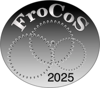
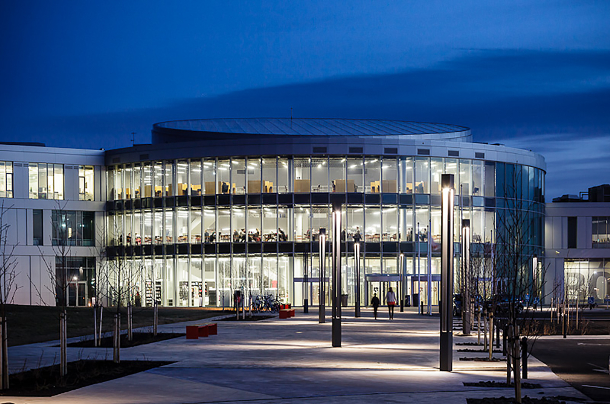

15th International Symposium on Frontiers of Combining Systems
FroCoS 2025

Reykjavik, Iceland, 29 September–1 October 2025
FroCoS is the main international
event for research on the development of
techniques and methods for the combination and integration of formal systems,
their modularization and analysis. The first FroCoS symposium was held in
Munich, Germany, in 1996. Initially held every two years, since 2004 it has been
organized annually with alternate years forming part of IJCAR.

Invited speakers
- Kaustuv Chaudhuri, LIX, Inria/École Polytechnique (joint with TABLEAUX)
Towards a Universal Interactive Theorem Proving Interface
- Carsten Fuhs,
Birkbeck, University of London
Automated Static Program Analysis via Constrained Term Rewriting
Call for papers
Important dates
All times are AoE.
Submission of title and abstract: 5 May 9 May 2025
Submission of paper: 12 May 16 May 2025
Notification: 23 June 2025
Final version: 7 July 2025
Scope
In various areas of computer science, such as logic, computation, program
development and verification, artificial intelligence, knowledge representation,
and automated reasoning, there is an obvious need for using specialized
formalisms and inference systems for selected tasks. To be usable in practice,
these specialized systems must be combined with each other and integrated into
general purpose systems. This has led to the development of techniques and
methods for the combination and integration of dedicated formal systems, as well
as for their modularization and analysis.
The International Symposium on Frontiers of Combining Systems (FroCoS)
traditionally focuses on these types of research questions and activities. Like
its predecessors, FroCoS 2025 seeks to offer a common forum for research in the
general area of combination, modularization, and integration of systems, with
emphasis on logic-based methods and their practical use.
List of topics
Topics of interest for FroCoS 2025 include (but are not restricted to):
-
combinations of logics (such as higher-order, first-order, temporal, modal, description or other non-classical logics)
-
combination and integration methods in SAT and SMT solving
-
combination of decision procedures, satisfiability procedures, constraint solving techniques, or logical frameworks
-
combination of logics with probability and/or fuzzy measures
-
combinations and modularity in ontologies
-
integration of equational and other theories into deductive systems
-
hybrid methods for deduction, resolution and constraint propagation
-
hybrid systems in knowledge representation and natural language semantics
-
combined logics for distributed and multi-agent systems
-
logical aspects of combining and modularizing programs and specifications
-
integration of data structures into constraint logic programming and deduction
-
combinations and modularity in term rewriting
-
methods and techniques for the verification and analysis of information systems
-
methods and techniques for combining logical reasoning with machine learning
-
methods and techniques for combining proof search and proof validation
Paper submission
The program committee seeks high-quality submissions describing original work,
written in English, not overlapping with published or simultaneously submitted
work to a journal or conference, workshop, symposium, etc. with archival
proceedings. Selection criteria include originality of ideas, rigour of
evaluation, significance of results, and quality of presentation. The page limit
in Springer LNCS style is 15 pages in total excluding references.
Papers must be edited in LaTeX using
the llncs
style and must be submitted electronically as PDF files through
Easychair at
https://easychair.org/conferences/?conf=frocos2025.
For all accepted papers, one author must attend the conference in
person and present the paper. One author (which may be a different
one, e.g. if the presenter is a student) must pay a regular (=
non-reduced) registration fee.
In exceptional circumstances (which must be agreed about with the
organizers by the registration deadline), online presentation is an
option. Still one author must pay a regular registration fee.
Publication
The conference proceedings (LNAI 15979) are published in
Springer's Lecture
Notes in Artificial Intelligence (LNAI/LNCS) series in Gold Open
Access under
the CC-BY-4.0
license.
Programme committee cochairs
Programme committee
- Franz Baader, TU Dresden
- Haniel Barbosa, Universidade Federal de Minas Gerais, Belo Horizonte
- Jasmin Blanchette, LMU München
- Cyril Cohen, Inria, ENS de Lyon
- Clare Dixon, University of Manchester
- Mathias Fleury, Universität Freiburg
- Silvio Ghilardi, Università degli Studi di Milano
- Jürgen Giesl, RWTH Aachen
- Albert Griggio, Fondazione Bruno Kessler, Trento
- Andreas Herzig, Université Paul Sabatier, Toulouse
- Boris Konev, University of Liverpool
- Georg Moser, Universität Innsbruck
- Lawrence Paulson, University of Cambridge
- Elaine Pimentel, University College London
- Andrei Popescu, University of Sheffield
- Andrew Reynolds, University of Iowa
- Christophe Ringeissen, Inria Nancy
- Philipp Rümmer, University of Regensburg
- Ulrike Sattler, University of Manchester
- Renate Schmidt, University of Manchester
- Roberto Sebastiani, Università di Trento
- Viorica Sofronie-Stokkermans, Universität Koblenz
- Martin Suda, České vysoké učení technické v Praze
- Akihisa Yamada, AIST, Tokyo
Accepted papers
- A Finite Abstraction of Real-Valued Functions for Complete Reasoning about Influence
Sören Möller, Florian Bruse and Martin Lange
- An Analytic Representation of the Semantics of First-Order S5
Anela Lolic, Matthias Baaz and Mariami Gamsakhurdia
- Certifying rlive: a New Proof Strategy for Liveness Model Checking
Alberto Griggio, Giulia Sindoni and Stefano Tonetta
- Checking Linear Integer Arithmetic Proofs in Lambdapi
Alessio Coltellacci and Stephan Merz
- Context-Aware Clause Selection Using Symbol Name Meanings in Theorem Proving
Claudia Schon
- Data-Driven Runtime Complexity Analysis
Samuel Frontull, Manuel Meitinger and Georg Moser
- Deciding Satisfiability for Overlaid Symbolic Heaps
Nicolas Peltier, Quentin Petitjean and Mihaela Sighireanu
- Difference of Constrained Patterns in Logically Constrained Term Rewrite Systems
Naoki Nishida, Misaki Kojima and Yuto Nakamura
- Exploiting Partial-Assignment Enumeration in Optimization Modulo Theories
Gabriele Masina and Roberto Sebastiani
- Graph Embedded Rewrite Systems: Combination and Undecidability Results
Serdar Erbatur, Andrew M. Marshall, Paliath Narendran and Christophe Ringeissen
- Iterative Monomorphisation
Tanguy Bozec and Jasmin Blanchette
- Number theory combination: natural density and SMT
Guilherme Toledo and Yoni Zohar
- Polite Combination in Parametric Array Theories
Rodrigo Raya and Christophe Ringeissen
- Reasoning in OWL 2 EL with Hierarchical Concrete Domains
Francesco Kriegel
- Shininess, Strong Politeness, and Unicorns (best paper)
Benjamin Przybocki, Guilherme Toledo and Yoni Zohar
- Subtyping in Dependently-Typed Higher-Order Logic
Colin Rothgang and Florian Rabe
- The Concrete Evonne: Visualization Meets Concrete Domain Reasoning
Christian Alrabbaa, Franz Baader, Raimund Dachselt, Alisa Kovtunova and Julián Méndez
- The Dependently Typed Higher-Order Form for the TPTP World
Daniel Ranalter, Cezary Kaliszyk, Florian Rabe and Geoff Sutcliffe
- The Expressive Power of Description Logics with Numerical Constraints over Restricted Classes of Models (best student paper)
Franz Baader and Filippo De Bortoli
- Weighted Rewriting
Martin Avanzini and Akihisa Yamada
- When GNNs Met a Word Equations Solver: Learning to Rank Equations
Parosh Aziz Abdulla, Mohamed Faouzi Atig, Julie Cailler, Chencheng Liang and Philipp Rümmer
Programme and registration
See the shared pages of the colocated
conferences.
Organizers, sponsors and local information
See the shared pages of the colocated
conferences.
Last update 18 August 2025